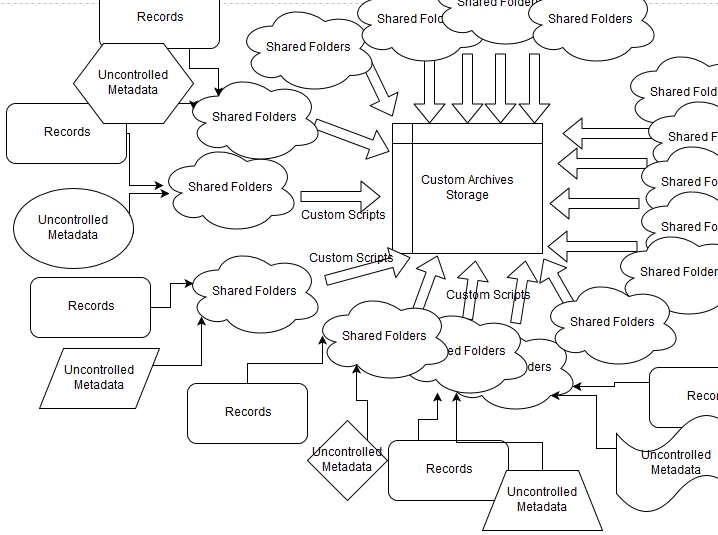
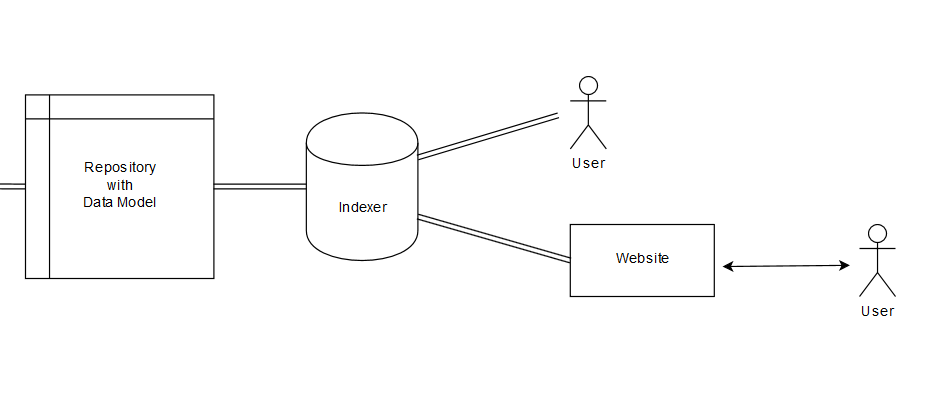

<!doctype html>
<html lang="en">
    <head>
        <meta charset="utf-8">
        <title>Espy Project</title>
        <link rel="stylesheet" href="css/reveal.css">
        <link rel="stylesheet" href="css/theme/moon2.css" id="theme">
        <!-- For syntax highlighting -->
        <link rel="stylesheet" href="lib/css/zenburn.css">

        <!-- If the query includes 'print-pdf', use the PDF print sheet -->
        <script>
          document.write( '<link rel="stylesheet" href="css/print/' + ( window.location.search.match( /print-pdf/gi ) ? 'pdf' : 'paper' ) + '.css" type="text/css" media="print">' );
        </script>
    </head>
    <body>

        <div class="reveal">
            <div class="slides"><section  data-markdown><script type="text/template">

## The Espy Project

#### Building Digital Infrastructure
</script></section><section  data-markdown><script type="text/template">
<!-- .slide: data-background="http://library.albany.edu/sites/all/themes/New_UArchives/img/full/news1.jpg" -->
</script></section><section  data-markdown><script type="text/template">
## University Archives

* Collect permanent university records

* Make them accessible
</script></section><section  data-markdown><script type="text/template">
## Traditional Practices

* Collecting during office moves, when storage areas get crowded

* Call the University Archivist for information

</script></section><section  data-markdown><script type="text/template">
## Establishing a Collecting Program


</script></section><section  data-markdown><script type="text/template">
## Establishing a Collecting Program


</script></section><section  data-markdown><script type="text/template">
## Establishing a Collecting Program


</script></section><section  data-markdown><script type="text/template">
## Establishing a Collecting Program


</script></section><section  data-markdown><script type="text/template">
<video width="100%" height="100%" autoplay controls>
  <source src="scroll.webm" type="video/webm">
</video>
</script></section><section  data-markdown><script type="text/template">
## An Interoperable Repository

* <a href="https://web.archive.org/cdx/search/cdx?url=http://www.albany.edu/undergraduate_bulletin/">Application Programming Interfaces (APIs)</a>


</script></section><section  data-markdown><script type="text/template">
## A Better Model


</script></section><section  data-markdown><script type="text/template">
## Makes Access Possible


</script></section><section  data-markdown><script type="text/template">

</script></section><section  data-markdown><script type="text/template">
<!-- .slide: data-background="img/espyMetadata.png" -->
</script></section><section  data-markdown><script type="text/template">
## Repository Supports

* University Records Collecting
* API access to collections like Espy
	* Enables new research
* On-Demand Digitization
* Born-Digital Outside Collecting
	* New York Modern Political Archive
	* National Death Penalty Archive


</script></section></div>
        </div>

        <script src="lib/js/head.min.js"></script>
        <script src="js/reveal.js"></script>

        <script>
            function extend() {
              var target = {};
              for (var i = 0; i < arguments.length; i++) {
                var source = arguments[i];
                for (var key in source) {
                  if (source.hasOwnProperty(key)) {
                    target[key] = source[key];
                  }
                }
              }
              return target;
            }

            // Optional libraries used to extend on reveal.js
            var deps = [
              { src: 'lib/js/classList.js', condition: function() { return !document.body.classList; } },
              { src: 'plugin/markdown/marked.js', condition: function() { return !!document.querySelector('[data-markdown]'); } },
              { src: 'plugin/markdown/markdown.js', condition: function() { return !!document.querySelector('[data-markdown]'); } },
              { src: 'plugin/highlight/highlight.js', async: true, callback: function() { hljs.initHighlightingOnLoad(); } },
              { src: 'plugin/notes/notes.js', async: true, condition: function() { return !!document.body.classList; } },
              { src: 'plugin/math/math.js', async: true }
            ];

            // default options to init reveal.js
            var defaultOptions = {
              controls: true,
              progress: true,
              history: true,
              center: true,
              transition: 'default',
              dependencies: deps
            };

            // options from URL query string
            var queryOptions = Reveal.getQueryHash() || {};

            var options = {
  "transition": "fade"
};
            options = extend(defaultOptions, options, queryOptions);
            Reveal.initialize(options);
        </script>
        
          <script src="/scripts/slides"></script>
    </body>
</html>
